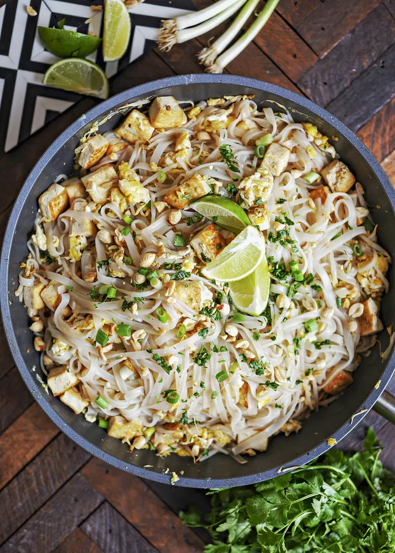

Pad Thai

An authentic vegetarian pad thai from Thai Table.
Extra sugar, lime and fish sauce are added at table to dish to taste.
2-3 Servings, Prep Time: 40 Minutes, Total Time: 40 Minutes
Ingredients
Sauce
- 4 teaspoons fish sauce
- 1-2 tablespoons tamarind paste
- 1/2 a lime
- 2 tablespoons sugar
- 1-2 teaspoon ground dries chilli pepper
- dash of ground pepper
Main dish
- 1/2 package Thai rice noodles
- 1/2 block extra firm tofu
- 2 tablespoons cooking oil
- 1 minced shallot
- 3 cloves minced garlic
- 1 egg
- 2 tablespoons peanuts
Optional
- 1-1/3 cup bean sprouts/li>
- 1/2 banana flower
- 1-1/2 cup Chinese chives
- 1 tablespoon preserved turnip
Steps
- Before preparing ingredients, press tofu in paper or dish towel. If already pressed skip this step
- Leave dry noodles to soak fully submerged in room temperature water. Remove from water after they are flexible but before they fully expand as they will be added to pan later.
- Crush and roast peanuts
- Minced garlic, cut shallots, and cut tofu into inch long juliennes.
- Use a wok or large pan/pot to fry tofu and vegetables
- Prepare sauce
- When tofu is turning golden brown turn heat up high add drained noodles. Stir quickly to avoid sticking.
Add sauce. If lots of juices in the wok turn up heat.
- Push noodles to side and scramble an egg in the space, then fold into dish
- Remove from heat when noodles are soft and dish is mixed
- Serve with roasted peanuts, raw beansprouts and lime wedge as garnish